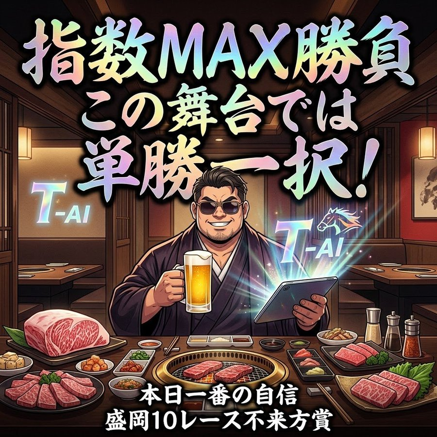
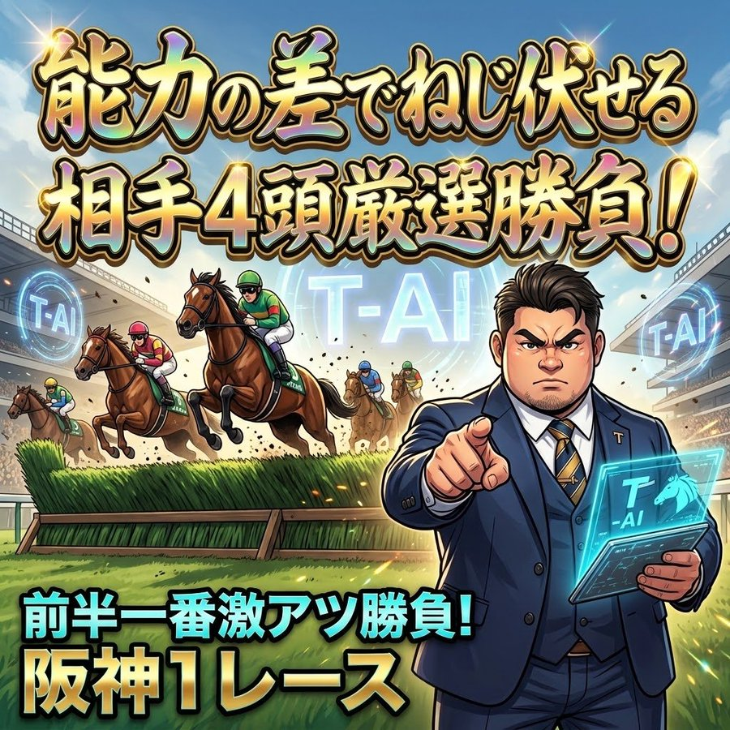

絶好調の波に乗るなら、今しかない。
独自の減点式AI「T-AI」で、的中のためのすべてを分析し尽くす。


直近の絶好調は、決して不正などではありません。ロジック的に本当に好調な時期に入っているからです。すでに会員様がいるため、結果を誤魔化すことは一切できません。
賛否両論あるかもしれませんが、目立つ前から「当てても外しても」馬券の証拠を出してきたのが事実です。実際に外した例も隠さず公開しています。
外した例を見る →「予想を見て勝てればいい」「負けても仕方ない」と言うような、ありふれた予想家とは違います。
的中させるためのすべてを行っても、運否天賦で勝ち負けが決まるのが競馬です。しかし——
「あとは運だけ」と言い切れるレベルまで、
あなたは分析できているでしょうか？
順調な時ほど、なぜ順調なのかを説明できないのが人間です。仕事や日常で当たり前に行われている「勝因・敗因の分析」が、競馬では圧倒的に欠けているのです。
カワサキクラブでは、その「分析」を徹底的に重視します。独自の減点式AI「T-AI」を駆使し、的中させるためのすべての分析を行います。
普段個人では行えない細部の細部まで分析し、「あとは運だけ」という状態に持っていく。あなたにプロのベストレポート（予想）を提供する。それが、カワサキクラブです。
人は多くの時間を、お金を稼ぐために使っています。受験、健康、不動産、会社の昇給、実務で使わない資格試験——直接お金にならない「お堅いもの」には投資してまで勉強するのに、なぜ直接お金になる競馬や、人生を豊かにする趣味には最大限の投資や勉強をしないのでしょうか？
多くの人はベクトルがズレています。なぜお金を稼ぐのか？ それは「自分の人生を豊かにするため」ですよね。楽して稼いだお金も、苦労して稼いだお金も、まったく同じ価値です。日本特有の根性論や世間体など、捨ててください。
だからこそ、お金を増やすための「投資先」を間違えないでください。幸いにも、今は絶好調の時期です。このタイミングを逃せば、勝てるチャンスを逃してしまいます。私は参加者と共に勝っていくと決めています。そのため、今年度の募集は「今回のみ」とさせていただきます。
2026年に行われるG1レースの予想を、すべて買い目と見解付きで更新します。「G1で勝つ」ための基本プランです。投票数が集中するG1は、T-AIがもっとも分析しやすい得意分野です。あなた個人では不可能なレベルの徹底した分析を行います。
2026年に行われる重賞レースも、買い目と見解付きで更新します。
※注意 G1とは違い、全レースを買うことは推奨しません。買うべきではない・自信がないレースは「無理」とはっきり伝え、見解のみをお送りします。無駄な投資を避けるためです。
以前49,800円で募集した「Takashi200（200レーストータルで勝つ）」の平場予想を、会員様にも配信します。残り100レースほど、平場で「買いたいレース」がある時だけ不定期に配信します。
カワサキクラブは不定期募集・限定制の、秘匿性が高いクラブです。今回参加いただいた方には「カワサキクラブ2027」の会員継続権利をプレゼントします。
今回は「G1で勝とう」というプランです。加入すれば、他の余計な予想や考察に惑わされることはなくなります。全レース当てるつもりで取り組みますし、現在最高の流れが来ています。
この金額は「覚悟の金額」です。
「他の予想にはもう浮気しない」という誓いの金額であり、最高の自己投資だと思ってください。
自信がないなら募集はしません。事実、これまで参加したくても枠が埋まり、参加できなかった方がたくさんいます。私もかつては負け組でした。しかし「T-AI」と「ルール化」によって、大きく人生が変わりました。
参加するか、しないか。
これが人生の分かれ目です。
一歩踏み出す勇気、他人と違うことをする勇気を持ってください。あなたのご参加を、お待ちしております。